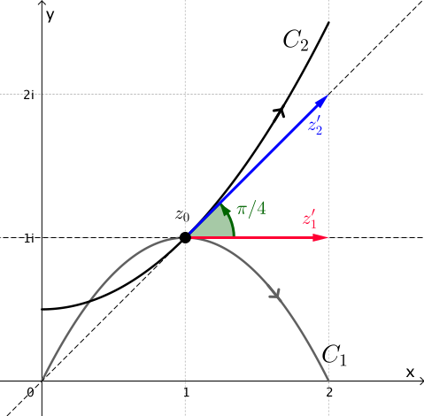

Mapeo Conforme
Sea $w=f(z)$ una aplicación compleja definida en un dominio $A.$ Consideremos dos curvas suaves $C_1$ y $C_2$ en $A$ que se intersectan en $z_0$ y tienen una orientación fija. Sean $z_1(t)$ y $z_2(t)$ parametrizaciones de $C_1$ y $C_2$ tal que $z_1(t_0) = z_2(t_0) = z_0,$ y tal que las orientaciones en $C_1$ y $C_2$ correspondan a los valores crecientes del parámetro $t.$ Dado que $C_1$ y $C_2$ son suaves, los vectores tangentes $z_1' = z_1'(t_0)$ y $z_2' = z_2'(t_0)$ son ambos diferentes de cero. Entonces, $\text{arg}\left(z_1'\right)$ y $\text{arg}\left(z_2'\right)$ representan los ángulos entre los vectores de posición de $z_1'$ y $z_2',$ respectivamente, y el eje \( x \) positivo.
Observación 1: Aquí consideraremos un sólo valor de $\text{arg}\left(z\right).$ Para mayores detalles véase El Argumento Principal.
")
|
")
|
Definimos el ángulo $\theta$ entre $C_1$ y $C_2$ en $z_0$ como el valor de \begin{eqnarray}\label{theta-angle} \text{arg}\left(z_2'\right) - \text{arg}\left(z_1'\right) \end{eqnarray} en el intervalo $[0, \pi],$ siempre que podamos rotar $z_1'$ en sentido antihorario alrededor de $z_0$ mediante el ángulo $\theta$ hasta $z_2'.$ En el caso de que se necesite una rotación en sentido horario, entonces $-\theta$ es el valor de (\ref{theta-angle}) en el intervalo $(-\pi, 0).$ En cualquiera de los casos, vemos que (\ref{theta-angle}) proporciona tanto la magnitud como el sentido del ángulo entre $C_1$ y $C_2$ en $z_0.$
Supongamos ahora que, bajo la aplicación $w = f(z),$ las curvas $C_1$ y $C_2$ en el plano $z$ se mapean en las curvas $\Gamma_1$ y $\Gamma_2$ en el plano $w,$ respectivamente. Debido a que $C_1$ y $C_2$ se intersectan en $z_0,$ debemos tener que $\Gamma_1$ y $\Gamma_2$ se intersectan en $f(z_0).$ Si $\Gamma_1$ y $\Gamma_2$ son suaves, entonces el ángulo entre $\Gamma_1$ y $\Gamma_2$ en $f(z_0)$ se define de manera similar como el ángulo $\phi\in [0, \pi]$ entre los vectores tangentes $w_1'$ y $w_2'$ definidos de manera análoga. Decimos que los ángulos $\theta$ y $\phi$ son iguales en magnitud si $\theta = \phi.$

|

|
En el plano $z,$ el vector $z_1',$ cuyo punto inicial es $z_0,$ puede rotarse mediante el ángulo $\theta$ hasta el vector $z_2'.$ Por supuesto, esta rotación en el plano $z$ puede ser en dirección antihoraria o en dirección horaria.


De manera similar, en el plano $w,$ el vector $w_1',$ cuyo punto inicial es $f(z_0),$ puede rotarse en dirección antihoraria o en dirección horaria mediante un ángulo de $\phi$ hasta el vector $w_2'.$ Si la rotación en el plano-$z$ es en la misma dirección que la rotación en el plano-$w,$ decimos que los ángulos $\theta$ y $\phi$ son iguales en sentido.
Ahora que hemos establecido la terminología con respecto a la magnitud y el sentido de un ángulo, estamos en posición de introducir el concepto de mapeo conforme. Decimos que la aplicación $w=f(z)$ es conforme en un punto $z_0$ en $A$ si para cada par de curvas suaves orientadas $C_1$ y $C_2$ en $A,$ que se intersectan en $z_0,$ el ángulo entre $C_1$ y $C_2$ en $z_0$ es igual al ángulo entre las curvas imagen $\Gamma_1$ y $\Gamma_2$ en $f(z_0)$ tanto en magnitud como en sentido.
También utilizaremos el término mapeo conforme para referirnos a una aplicación compleja $w = f(z)$ que es conforme en $z_0.$ Además, si $w = f(z)$ mapea un dominio $A$ en un dominio $B$ y si $w = f(z)$ es conforme en cada punto de $A,$ entonces llamamos a $w = f(z)$ un mapeo conforme de $A$ en $B.$
Funciones analíticas
Una propiedad geométrica notable que poseen todas las funciones analíticas complejas es que, en puntos no críticos, preservan los ángulos y, por lo tanto, definen mapeos conformes.
Deseamos probar que el ángulo $\theta$ entre $C_1$ y $C_2$ en $z_0$ es igual al ángulo $\phi$ entre $\Gamma_1$ y $\Gamma_2$ en $f(z_0)$ tanto en magnitud como en sentido.
Podemos asumir, renumerando $C_1$ y $C_2$ si es necesario, que $z_1'=z_1'(t_0)$ puede rotarse en sentido antihorario alrededor de $z_0$ mediante el ángulo $\theta$ hasta $z_2'=z_2'(t_0).$ Entonces, utilizando (\ref{theta-angle}), sabemos que \[ \theta = \text{arg}\left(z_2'\right) - \text{arg}\left(z_1'\right) \] en el intervalo $[0,\pi].$
Usando la regla de la cadena, tenemos que \begin{eqnarray*} w_1' = w_1'(t_0)= f'\left(z_1\left(t_0\right)\right)\cdot z_1'\left(t_0\right)= f'\left(z_0\right)\cdot z_1' \end{eqnarray*} y \begin{eqnarray*} w_2' = w_2'(t_0)= f'\left(z_2\left(t_0\right)\right)\cdot z_2'\left(t_0\right)= f'\left(z_0\right)\cdot z_2'. \end{eqnarray*}
Dado que $C_1$ y $C_2$ son suaves, tanto $z_1'$ como $z_2'$ son distintos de cero. Además, tenemos que $f'\left(z_0\right)\neq 0,$ y por lo tanto, tanto $w_1'$ como $w_2'$ son distintos de cero. Ahora, el ángulo $\phi$ entre $\Gamma_1$ y $\Gamma_2$ en $f(z_0)$ tiene como un valor
Observación 2: El teorema anterior establece que una transformación es conforme en $z_0$ si $f$ es analítica en ese punto y $f'(z_0)\neq 0.$ Tal transformación es, de hecho, conforme en cada punto de alguna vecindad de $z_0.$ Esto se debe a que debe ser analítica en una vecindad de $z_0;$ y dado que su derivada $f'$ es continua en esa vecindad, también existe una vecindad de $z_0$ en donde $f'(z_0)\neq 0.$
Ejemplos
Ahora, con ayuda del Teorema 1, es relativamente sencillo determinad cuando una función analítica es conforme.
Ejemplo 1: El mapeo $w = e^z$ es conforme en todo el plano $z$ ya que $(e^z)'= e^z \neq 0$ para cada $z.$ Consideremos cualquier par de líneas $x = c_1$ y $y = c_2$ en el plano $z,$ la primera con dirección hacia arriba y la segunda dirigida hacia la derecha. Las imágenes bajo el mapeo $w = e^z$ son un círculo orientado positivamente centrado en el origen y un rayo que parte del origen, respectivamente. Como se ilustra en la Figura 7, el ángulo entre las líneas en su punto de intersección es un ángulo recto en la dirección negativa, y lo mismo es cierto para el ángulo entre el círculo y el rayo en el punto correspondiente en el plano $w.$

Ejemplo 2: La función $f(z)=z^2$ no es conforme en $z_0=0.$ La explicación es, por supuesto, que $z_0=0$ es un punto crítico de $f,$ es decir, $f'(0)=0.$ Sorprendentemente, el mapeo preserva ángulos en todas partes, excepto en este punto. Por ejemplo, consideremos el semiplano derecho $\{\textbf{Re}(z)>0\}.$ Esta región es mapeada por $w=z^2$ de manera conforme sobre el plano cortado $\mathbb C \setminus (-\infty,0],$ como se ilustra en la Figura 8. 쯇uedes pensar en otra región donde $w=z^2$ sea conforme?

|

|
Un mapeo que preserva la magnitud del ángulo entre dos curvas suaves pero no necesariamente el sentido se denomina un imapeo isogonal.
Ejemplo 3: El mapeo $w = \conj{z}$ es una reflección del eje real. El mapeo es isogonal pero no conforme.
Consideremos, por ejemplo, las curvas $C_1$ y $C_2$ dadas por
|  |

|
Las curvas imagen están parametrizadas por
El ángulo entre $\Gamma_1$ y $\Gamma_2$ en $w_0$ es $\phi=\pi/4.$ Así, los ángulos $\theta$ y $\phi$ son iguales en magnitud. Sin embargo, dado que la rotación a través de $\pi/4$ del vector $z_1'$ sobre $z_2'$ debe ser en sentido antihorario, mientras que la rotación a través de $\pi/4$ de $w_1'$ sobre $w_2'$ debe ser en sentido horario, concluimos que $\theta$ y $\phi$ no son iguales en sentido.
Por lo tanto, $w=\conj{z}$ no es conforme.
En el applet de abajo puedes explorar el efecto de algunas transformaciones sobre una región. En particular, el applet comienza con un cuadrado definido como $S=[-0.5,0.5]\times[-0.5,-1.5].$ Primero, selecciona una transformación y observa cómo se transforma la región $S$. Luego, modifica esta región arrastrando los puntos de las esquinas del cuadrado. 쯈ué notas? 쯈ué preguntas pueden surgir?
Inversas locales
Una transformación $w = f (z)$ que es conforme en un punto $z_0$ tiene una inversa local allí. Es decir, si $w_0 = f (z_0),$ entonces existe una transformación única $z = f^{-1}(w),$ que está definida y es analítica en un vecindario $V$ de $w_0,$ tal que $f^{-1}(w_0) = z_0.$ Además, $f^{-1}(w)$ es diferenciable en $V$ y \[ \frac{d}{dw}f^{-1}(w) = \frac{1}{f'(z)}. \]
La existencia de tal inversa puede verificarse usando el Teorema de la Función Inversa de análisis real en dos dimensiones:
Si $w = f (z)$ es conforme en $z_0 = x_0+iy_0,$ existe algún vecindario $U$ de $z_0$ en el cual $f$ es analítica. Para $z=x+iy,$ si escribimos \begin{eqnarray}\label{trans01} f(z) = u(x,y)+ iv(x,y), \end{eqnarray} sabemos que existe un vecindario del punto $(x_0,y_0)$ en el cual las funciones $u(x,y)$ y $v(x,y),$ junto con sus derivadas parciales de todos los órdenes, son continuas (una nueva sección sobre este hecho estará disponible pronto).
La función definida en (\ref{trans01}) representa una transformación del vecindario $U$ al plano $uv$. Además, el determinante
conocido como el Jacobiano de la transformación $f$, no es cero en el punto $(x_0,y_0).$ Es fácil demostrar esto considerando las ecuaciones de Cauchy-Riemann \[ u_x = v_y \quad \text{y}\quad u_y = -v_x. \] Luego podemos escribir $J_f$ como \[ J_f = \left(u_x\right)^2+\left(v_x\right)^2=\left|f'(z)\right|^2. \] Dado que $w=f(z)$ es conforme en $z_0,$ entonces $f'\left(z_0\right)\neq 0,$ y, en consecuencia, el Jacobiano no es cero en el punto $(x_0,y_0).$
Las condiciones de continuidad anteriores en las funciones $u(x,y) $ y $v(x,y)$ y sus derivadas, junto con esta condición sobre el Jacobiano que no es cero en el punto $(x_0,y_0)$, son suficientes para asegurar la existencia de una inversa local de la transformación (\ref{trans01}) en $(x_0,y_0),$ lo cual se establece en el Teorema 2.
En otras palabras, si $u_0 = u(x_0,y_0)$ y $v_0=v(x_0,y_0),$ entonces existe una única transformación continua \begin{eqnarray}\label{trans02} f^{-1}(w) = x(u,v)+ i y(u,v) \end{eqnarray} definida en un vecindario $V$ del punto $(u_0,v_0)$ y que mapea ese punto a $(x_0,y_0),$ tal que las ecuaciones (\ref{trans01}) se cumplen cuando las ecuaciones (\ref{trans02}) se cumplen.
Además de ser continua, los componentes real e imaginario de la función (\ref{trans02}) tienen derivadas parciales de primer orden continuas que satisfacen las ecuaciones
en todo $V.$ Como las ecuaciones de Cauchy-Riemann se cumplen para $u$ y $v,$ también se cumplen para $x$ y $y,$ es decir \[ x_u = y_v \quad \text{y}\quad x_v = - y_u. \] en todo $V.$ En consecuencia, la función definida en (\ref{trans02}) es diferenciable. Además, usando las expresiones en (\ref{eqls}) y las ecuaciones de Cauchy-Riemann, tenemos que
Por lo tanto, acabamos de demostrar lo siguiente:
El Teorema de la Función Inversa afirma solo la existencia de una inversa local para $f.$ Por ejemplo, consideremos la función $f(z)=z^2$ definida en $A = \C\setminus \{0\}.$ Entonces $f'(z)= 2z \neq 0 $ para cada punto de $A.$ El Teorema de la Función Inversa establece que $f$ tiene una única inversa analítica local, que es, de hecho, alguna rama de la función raíz cuadrada $f^{-1}=\sqrt{z}.$ Sin embargo, $f$ no es inyectiva en todo $A,$ ya que $f(1)= f(-1).$ Por lo tanto, $f$ será inyectiva solo dentro de vecindarios suficientemente pequeños alrededor de cada punto.
El Teorema del Mapeo de Riemann
En muchas aplicaciones, es común buscar un mapeo conforme de un dominio \( A \) a un dominio más simple \( B \). Una pregunta natural que hacer es si tal mapeo existe. Es decir, dado el dominio \( A \) y \( B \), 쯘xiste un mapeo conforme de \( A \) a \( B \)?
Una respuesta a esta pregunta fue dada por Bernhard Riemann en 1851. Aunque hubo una laguna en la prueba original de Riemann (que fue posteriormente corregida), este asombroso teorema todavía lleva su nombre:
A partir de este resultado, vemos que si \( A \) y \( B \) son dos dominios simplemente conexos, con \( A \neq \C \) y \( B \neq \C \), entonces existe un mapeo conforme biyectivo \( h: A \to B \). Si \( f: A \to D \) y \( g: B \to D \) son conformes, podemos establecer \( h = g^{-1} \circ f \) (ver Figura 10). Dos dominios \( A \) y \( B \) se llaman equivalentes conforme si hay un mapeo conforme biyectivo de \( A \) a \( B \). Así, el Teorema de Mapeo de Riemann implica que dos dominios simplemente conexos (distintos de \( \C \)) son equivalentes conforme.

El teorema de Riemann es de crítica importancia teórica, pero su prueba no es constructiva. Esto significa que el teorema establece la existencia del mapeo \( f \), pero no ofrece un método para encontrar una fórmula para \( f \). Una prueba del Teorema de Mapeo de Riemann está más allá del alcance de este texto. El lector interesado puede consultar los libros:
- Complex Analysis por Lars V. Alfors, McGraw-Hill, 1979; y
- Basic Complex Analysis por Jerrold. E. Marsden & Michael J. Hoffman, W. H. Freeman and Company, 1999.